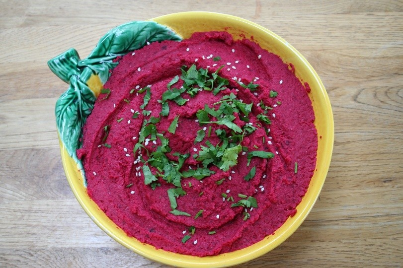
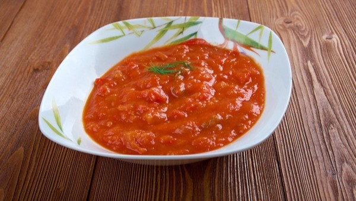

צור קשר
אודות
בית
חומוס בריאות!
ממרח שמנת שום שמיר טבעוני!
פסטו ירוקים!
חומוס עדשים כתומות!
ממרח סלק, אגוזי מלך וטחינה!
ממרח אפונה ירוק וטעים!
סלט מטבוחה מרוקאי!
ממרח שעועית לבנה רומני!
טחינה סגולה!
 חומוס עדשים כתומות!
חומוס עדשים כתומות!